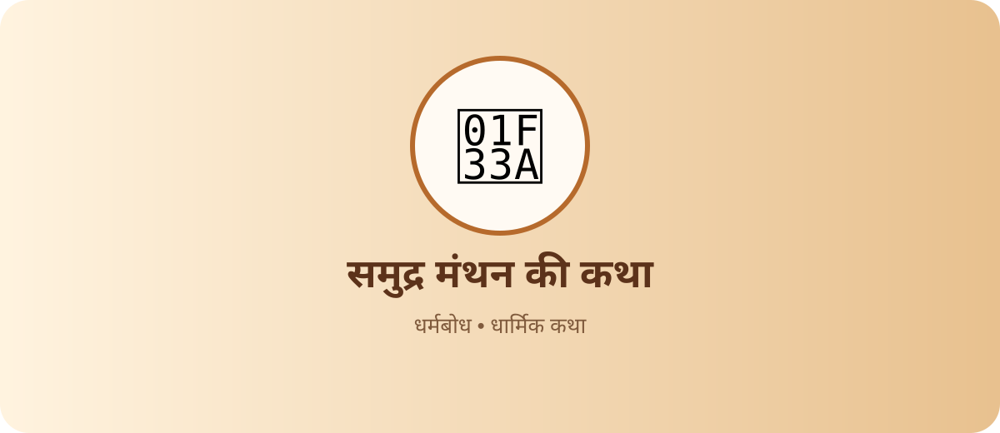
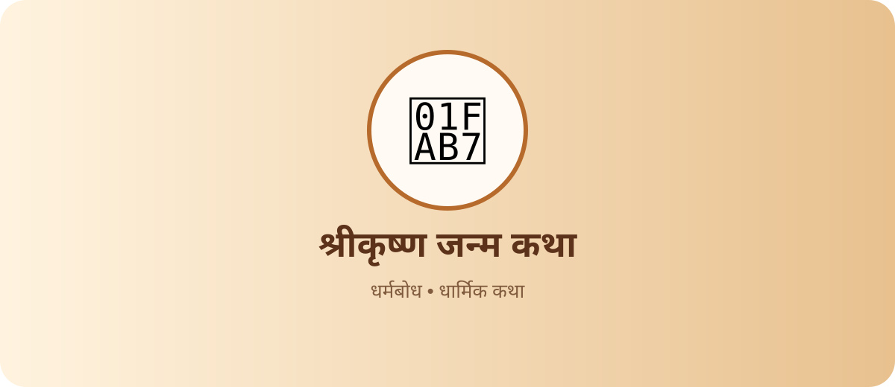
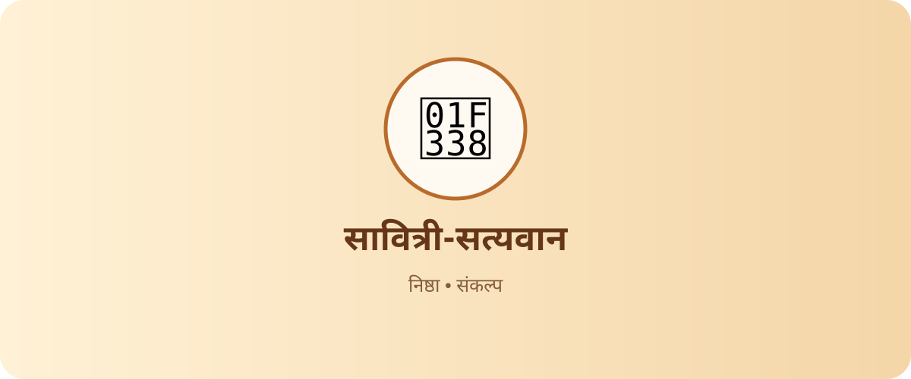

ॐ • सनातन ज्ञान परंपरा
📖 धार्मिक कथाएँ
रामायण, श्रीकृष्ण, शिव-शक्ति, भक्ति और व्रत से जुड़ी प्रेरणादायक कथाएँ पढ़ें। हर कथा में जानें उसका प्रसंग, धार्मिक भाव और जीवन की सीख।
11 कथाएँ


भक्ति कथा
🦁 प्रह्लाद और नरसिंह
भक्त प्रह्लाद की अटूट श्रद्धा और भगवान नरसिंह के प्राकट्य की कथा।
पूरी कथा पढ़ें
रामायण
🏹 श्रीराम जन्म कथा
अयोध्या, राजा दशरथ और मर्यादा पुरुषोत्तम श्रीराम के जन्म की कथा।
पूरी कथा पढ़ें
रामायण
🐒 हनुमान जी की बाल कथा
बाल हनुमान के साहस, सूर्य को फल समझने और वरदानों का प्रसंग।
पूरी कथा पढ़ें

कोई कथा नहीं मिली
दूसरा शब्द खोजें या “सभी कथाएँ” चुनें।
🌼 धर्मबोध पर कथा पढ़ने का अनुभव
किसी कथा को पढ़ते समय उसके प्रसंग, पात्रों और सीख पर ध्यान दें। अलग-अलग ग्रंथों और क्षेत्रीय परंपराओं में कथा के विवरण भिन्न हो सकते हैं; यहाँ कथाओं को सरल हिंदी में परिचयात्मक रूप से प्रस्तुत किया गया है।